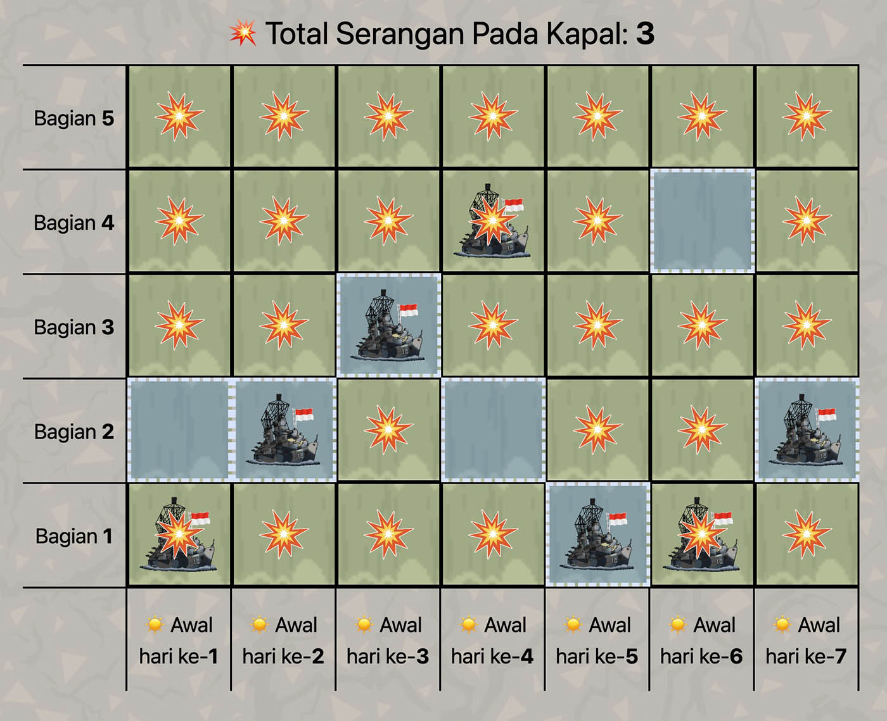

Deskripsi
Bogor sedang diserang monster jahat.
Pak Dengklek sedang berada di kapal pertahanan yang terletak di sungai Cisadane.
Sungai Cisadane dibagi menjadi $10^9$ bagian yang dinomori dari $1$ sampai $10^9$.
Pada awal hari ke-$1$, kapal Pak Dengklek berada pada bagian ke-$1$ dari sungai.
Pada akhir dari setiap hari, Pak Dengklek harus melakukan salah satu dari dua hal berikut tepat satu kali:
- Mengikuti arus sungai untuk menggerakkan kapalnya dari bagian ke-$x$ ke bagian ke-($x + 1$) dari sungai, dengan $x$ melambangkan nomor bagian tempat kapal berada saat ini.
- Menggunakan teknologi ajaib untuk membuat kapalnya langsung berada di bagian ke-$1$ dari sungai.
Monster akan menyerang sungai selama $N$ hari dari hari ke-$1$ sampai hari ke-$N$.
Pada awal dari masing-masing hari, monster akan menyerang seluruh bagian sungai kecuali satu bagian.
Formalnya, untuk setiap $1 \leq i \leq N$, bagian ke-$A_i$ dari sungai adalah zona aman pada hari ke-$i$.
Ini berarti, kapal Pak Dengklek tidak akan terkena serangan pada hari ke-$i$ jika dan hanya jika kapalnya berada pada bagian ke-$A_i$ sungai pada awal hari itu.
Berapa minimum banyaknya serangan yang mengenai kapal Pak Dengklek jika Pak Dengklek menggerakkan kapalnya secara optimal?
Batasan
- $1 \leq N \leq 200\,000$
- $1 \leq A_i \leq N$
Subsoal
-
(5 poin) Hanya berisi kasus uji berikut:
$N = 10$;
$A = [2, 1, 2, 3, 2, 3, 4, 3, 4, 5]$
- (8 poin) $N \leq 8$
- (7 poin) $N \leq 17$
- (7 poin) $A_1 = A_2 = \ldots = A_N$
- (11 poin) $A_i \leq 2$
- (21 poin) $N \leq 200$
- (11 poin) $N \leq 3000$
- (10 poin) $A_i \leq 200$
- (20 poin) Tidak ada batasan tambahan.
Masukan
Masukan diberikan dalam format berikut:
N
A1 A2 … AN
Keluaran
Keluarkan sebuah baris berisi sebuah bilangan bulat yang menyatakan minimum banyaknya serangan yang mengenai kapal Pak Dengklek.
Contoh Masukan
7
2 2 3 2 1 4 2
Contoh Keluaran
3
Penjelasan Contoh
Salah satu strategi yang optimal adalah sebagai berikut:
-
Awal hari ke-$1$, kapalnya di bagian ke-$1$.
Zona amannya di bagian ke-$2$, maka kapalnya terkena serangan.
Lalu, kapalnya mengikuti arus dan bergerak ke bagian ke-$2$.
-
Awal hari ke-$2$, kapalnya di bagian ke-$2$.
Zona amannya di bagian ke-$2$, maka kapalnya tidak terkena serangan.
Lalu, kapalnya mengikuti arus dan bergerak ke bagian ke-$3$.
-
Awal hari ke-$3$, kapalnya di bagian ke-$3$.
Zona amannya di bagian ke-$3$, maka kapalnya tidak terkena serangan.
Lalu, kapalnya mengikuti arus dan bergerak ke bagian ke-$4$.
-
Awal hari ke-$4$, kapalnya di bagian ke-$4$.
Zona amannya di bagian ke-$2$, maka kapalnya terkena serangan.
Lalu, kapalnya menggunakan teknologi ajaib dan langsung berada di bagian ke-$1$.
-
Awal hari ke-$5$, kapalnya di bagian ke-$1$.
Zona amannya di bagian ke-$1$, maka kapalnya tidak terkena serangan.
Lalu, kapalnya menggunakan teknologi ajaib dan langsung berada di bagian ke-$1$.
-
Awal hari ke-$6$, kapalnya di bagian ke-$1$.
Zona amannya di bagian ke-$4$, maka kapalnya terkena serangan.
Lalu, kapalnya mengikuti arus dan bergerak ke bagian ke-$2$.
-
Awal hari ke-$7$, kapalnya di bagian ke-$2$.
Zona amannya di bagian ke-$2$, maka kapalnya tidak terkena serangan.
Lalu, kapalnya mengikuti arus dan bergerak ke bagian ke-$3$.
Berikut adalah ilustrasi untuk strategi di atas.

Jika mengikuti strategi ini, kapal Pak Dengklek akan terkena serangan $3$ kali, yaitu pada hari ke-$1$, ke-$4$, dan ke-$6$.
Bisa dibuktikan bahwa tidak ada strategi yang membuat kapalnya terkena serangan kurang dari $3$ kali.